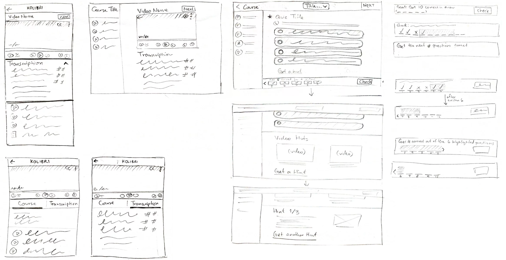

Kolibri Responsive Media Design
Learning Equality is a non-profit organization with a mission to widen access to education in offline contexts. KA Lite, an educational platform that contains Khan Academy content on a local server, has been used in over 160 countries and has reached the hands of over 2.1 million learners. Currently in development, Kolibri is a continued effort to improve upon KA Lite by enabling teachers to develop their own educational content, making their teaching experience more personalized and relevant to the local context.
UX/UI Designer
Kanyanat Tongprasearth
& Marisa Kanemoto
Jan 2017 - April 2017
This project's success would entail extensive research of media displays (audio, video, text, quiz) and adaptability to varying devices (desktop, tablet, mobile). The endgoal is to design an interface with necessary tools to support and promote the learners' educational experience.
User Task Analysis | Competitive Analysis | Wire-framing | High-fidelity prototyping
Marisa and I collaborated on extensive competitive analysis of media interface across educational and other related platforms. Out of 4 types of media involved (audio, video, text, quiz), my focus was on video and quiz interfaces. The wireframes and prototypes shown here are my personal contributions. Interested in the rest? View the joint presentation by Marissa and I here.
Competitive analysis, high-fidelity prototype, interactive prototype of each media type
The UX Design team had visited a school in rural India to test early prototypes of Kolibri. Working with volunteer students, we interviewed them about their familiarity with technology and learning assistant tools. While giving them specific tasks to perform, we observed their interactions and any difficulties they experienced.
We found that the students had difficulty identifying the audio icon. They would mismatch the icon with its function, thinking it was a video icon. With less experience with technology and interface representations, they misunderstood key components of the application. We concluded from this finding that Kolibri, as an application for many levels of education and technology experience, should be made for universal usage and not make any assumptions in its interface.
From user research and the project brief, we created design guidelines to frame the design process. These are reference points that we can use to measure the progress and effectiveness of our design.
Universal Design Design for all levels of technology familiarity/experience
Immersive Experience Allow effective content transition to encourage focus in learning
Enhance Learning Interaction Provide needed tools and functions to promote learning
To understand media interfaces and responsive design, we compiled examples of platforms that are thoughtfully designed. Below is a subset of that analysis, highlighting intuitive layouts and useful functionalities.
Responsive Nav Bar. At smaller screen sizes, the functionalities are integrated in the hamburger menu. Horizontal arrangements should convert to vertical layouts. Collapsible fields can be used to shorten the length of the content length.
Video Controls. For simplicity, 5 basic controls at the bottom is usually sufficient. For educational content, additional functionalities (i.e. transcriptions) are helpful to learning.
Video-Related Content. The space immediately below the video is crucial, possibly displaying video descriptions, links to other video, or the transcriptions. Allowing users to toggle between subpages maximizes space usage.
Quiz Feedback. An anchored bar keeps the button to check answers and view progress available at all times. For learners, receiving immediate feedback about their answer choice helps solidify their understanding of the content. When the answer is incorrect, giving the link to view the original video provides quick access to review content.
Quiz Review. After quiz completion, learners should be able to revisit the questions, answer choices, selected answer, and explanation for the correct answer. From the overall review, learners can find patterns in their answer choices and determine specific contents to review.
Based on the competitive analysis and specific project criteria, I sketched out multiple versions of the video and quiz layouts.
Marissa and I walked through our wireframes for Learning Equality's UX Design Team and received useful feedback for future improvements.
Full screen video experience. One goal as an education technology is to enable an immersive learning experience for learners. We needed to find ways to transition seamlessly between different contents in order to keep the focus centered on learning.
Unified video and audio player interface. To keep the Kolibri software light-weight, we will use the same interface for video and audio player. The player interface needs to reflect necessary functionalities for both while highlighting the functionalities appropriate to each content type.
App bar. The overall Kolibri design will be following Google's Material Design Guidelines . Specifically, the team has decided on utilizing the app bar, which is used for branding, navigation, search, and other actions. We were asked to incorporate this app bar to our wireframes.
Quiz format. Learners must answer 4 questions correctly out of the next 5 in order to pass. The exact numbers vary between different quizzes. We were tasked with designing a visual indication of quiz progress to indicate what learners must do to pass the quiz.
From the UI sketches, I created a digital prototype using Sketch. I focused on making useful tools available when needed, toggling between important content underneath the video, and the ability to search the transcript.
Mobile

Desktop
Here, I focused on immediate feedback on correctness, accessible content review, and overall quiz analysis to enhance learning. Below are a few samples from the prototype.
Mobile
Desktop
Checkout the full interactive prototype for Kolibri's video display or quiz display!